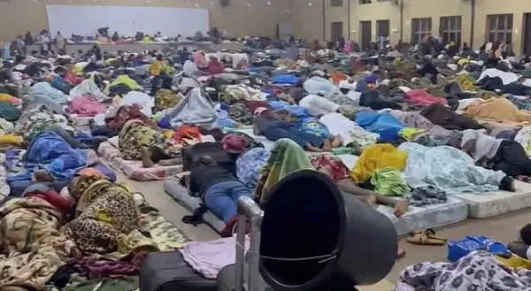

Ogun govt clarifies video of corps members sleeping in hall

The Ogun State Government says a viral video showing prospective corps members sleeping in a hall at the NYSC Orientation Camp in Sagamu captured a temporary arrangement during registration, not their assigned accommodation. Registration continued into the night, the government said, while NYSC officials completed credential checks and screening before allocating hostel spaces.
Kayode Akinmade, Special Adviser on Media and Strategy to Governor Dapo Abiodun, said those whose registration ran late were placed in the multipurpose hall to rest, with mattresses provided. He said registration, screening and hostel allocation are handled by NYSC officials.
Akinmade said Ogun received more than 4,300 prospective corps members in the current batch, compared with slightly more than 2,000 in previous batches, putting additional pressure on available camp facilities. He said the state provided 500 mattresses for the exercise, while the Akarigbo of Remo donated 100 and later contributed a further 200.
The government also pointed to other support for corps members. Akinmade said Abiodun recently approved a ₦50,000 welfare grant for each of the 3,050 corps members in the 2026 Batch C, Stream I, to assist with transportation. He said the state supports the scheme’s welfare while NYSC remains responsible for camp operations, and that the government would continue working to provide an enabling environment for corps members serving in Ogun.
Source: Vanguard